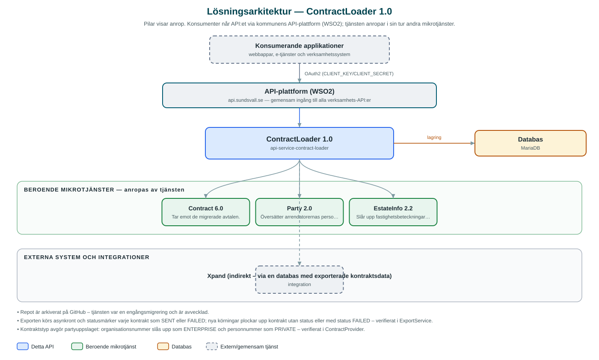

ContractLoader
Engångsladdare som migrerade kommunens arrendekontrakt från fastighetssystemet Xpand till det gemensamma Contract-API:et.
Om API:et
ContractLoader togs fram för att flytta stadsbyggnadskontorets arrendekontrakt – tomträtter, båtplatser, jakt- och jordbruksarrenden med flera – från det gamla fastighetssystemet Xpand till kommunens gemensamma avtalstjänst Contract. Tjänsten arbetade mot en databas med exporterade kontraktsdata (arrendekontrakt, arrendatorer, fastigheter och noteringar) och skapade motsvarande avtal i Contract-API:et.
Vid exporten översattes Xpands kontraktstyper till Contract-API:ets avtalstyper, arrendatorernas person- och organisationsnummer slogs upp till partyId via Party-API:et och fastighetsbeteckningar kompletterades via EstateInfo. Varje avtal märktes med parametern migratedFrom=Xpand samt ursprungligt kontraktsnummer, så att härkomsten går att spåra i det nya systemet.
Exporten startades manuellt via ett API-anrop och statusmärkte varje kontrakt som SENT eller FAILED, så att misslyckade kontrakt kunde köras om. Repot är arkiverat på GitHub – migreringen är genomförd och tjänsten är avvecklad.
Det här gör API:et
- Kontraktsexport – Läser arrendekontrakt ur migreringsdatabasen sidvis och skapar dem som avtal i Contract-API:et.
- Typöversättning – Mappar Xpands kontraktstyper (tomträtt, båtplats, jaktarrende m.fl.) till Contract-API:ets avtals- och arrendetyper.
- Partsuppslag – Slår upp arrendatorernas person- eller organisationsnummer till partyId via Party-API:et.
- Fastighetskomplettering – Hämtar fastighetsbeteckningar via EstateInfo och kopplar dem till avtalen.
- Spårbarhet och omkörning – Märker avtalen med migratedFrom=Xpand och ursprungsuppgifter samt statusmärker varje kontrakt (SENT/FAILED) så att misslyckade poster kan köras om.
API-dokumentation
Ingen incheckad OpenAPI-specifikation hittades i källkodsförrådet; se källkoden för aktuell API-dokumentation.
Teknisk dokumentation
Nedan beskrivs hur tjänsten är uppbyggd, vilka andra tjänster den anropar och vad som krävs för att driftsätta den. Informationen är härledd ur källkoden och dess konfiguration på GitHub.
Arkitektur

API:et är en mikrotjänst (Java 25, Spring Boot via kommunens gemensamma tjänsteplattform dept44 (8.0.6), byggd med Maven). Konsumenter når tjänsten via kommunens gemensamma API-plattform (WSO2) på api.sundsvall.se – tjänsten anropas aldrig direkt. Tjänsten anropar i sin tur andra mikrotjänster i kommunens tjänstelandskap. Lagring: MariaDB; läser exporterade Xpand-tabeller (arrendekontrakt, arrendatorer, fastigheter, noteringar) och statusmärker varje kontrakt efter export. Övriga integrationer som förekommer i koden: Xpand (indirekt – via en databas med exporterade kontraktsdata).
Teknikstack
- Språk: Java 25
- Ramverk: Spring Boot via kommunens gemensamma tjänsteplattform dept44 (8.0.6), byggd med Maven
- Databas: MariaDB; läser exporterade Xpand-tabeller (arrendekontrakt, arrendatorer, fastigheter, noteringar) och statusmärker varje kontrakt efter export
- Övrigt: Feign-klienter genererade ur Contract-, Party- och EstateInfo-specifikationerna (openapi-generator), asynkron exportkörning
Beroenden till andra mikrotjänster
Tjänsten anropar följande mikrotjänster. Versionerna är hämtade ur källkodens integrationsklienter.
| Tjänst | Version | Användning |
|---|---|---|
| Contract | 6.0 | Tar emot de migrerade avtalen. |
| Party | 2.0 | Översätter arrendatorernas person- och organisationsnummer till partyId. |
| EstateInfo | 2.2 | Slår upp fastighetsbeteckningar som kopplas till avtalen. |
Konfiguration och driftsättning
- application.yml med URL och OAuth2-klientuppgifter för Contract, Party och EstateInfo
- MariaDB-anslutning till migreringsdatabasen med Xpand-exporten
- Kommun-id 2281 (Sundsvall) är hårdkodat i tjänsten – laddaren byggdes för en enda kommun
Noterbart ur källkoden
- Repot är arkiverat på GitHub – tjänsten var en engångsmigrering och är avvecklad.
- Exporten körs asynkront och statusmärker varje kontrakt som SENT eller FAILED; nya körningar plockar upp kontrakt utan status eller med status FAILED – verifierat i ExportService.
- Kontraktstyp avgör partyuppslaget: organisationsnummer slås upp som ENTERPRISE och personnummer som PRIVATE – verifierat i ContractProvider.
- API:ets cleaner-resurs är en tom stubbe (TODO i koden) – endast exporter-jobbet är implementerat.
- Ingen OpenAPI-specifikation finns incheckad i repot; API:et består av två POST-resurser under /{municipalityId}/jobs.
Källkod
Källkoden är öppen och finns hos Sundsvalls kommun på GitHub. I källkodsförrådet finns även instruktioner för att klona, konfigurera och starta tjänsten i egen miljö.